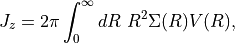
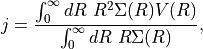
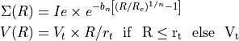
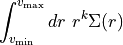

Galaxies angular momentum¶
Author: Wilfried Mercier - IRAP
Computations related to angular momenta of galaxies.
-
galaxy.angularMomentum.momentum(rt, vt, n=1, Re=10, Ie=10, normalise=True)[source]¶ Compute the analytical angular momentum for a single Sérsic profile and a ramp model rotation curve in the unnormalised case

and, in the normalised case

where

- Parameters
rt (int or float) – kinematical transition radius
vt (int or float) – kinematical plateau velocity (must be positive)
Ie (int or float) – (Optional) flux at Re
n (int or float) – (Optional) Sérsic index
normalise (bool) – (Optional) whether to normalise by the first order moment of the light distribution. Default is True
Re (int or float) – (Optional) effective radius. Must have the same unit as rt. Default is 10.
- Returns
central angular momentum along the vertical axis. When normalised, the unit is that of rt*vt.
- Return type
int or float
- Raises
ValueError – if rt <= 0 or vt <= 0
-
galaxy.angularMomentum.sersic_kthMoment(k, vmin, vmax, n=1, Re=10, Ie=10)[source]¶ Compute the kth radial moment for a Sérsic profile

- Parameters
k (int or float) – order of the moment
vmin (int or float) – lower bound to compute the kth moment. Must be greater than 0 and less than vmax. Should be the same unit as Re.
vmax (int or float) – upper bound to compute the kth moment. Must be greater than 0 and more than vmin. Should be the same unit as Re.
Ie (int or float) – (Optional) flux at Re
n (int or float) – (Optional) Sérsic index
Re (int or float) – (Optional) effective radius
- Returns
kth order moment
- Return type
int or float
- Raises
ValueError – if vmin<0 or vmin >= vmax